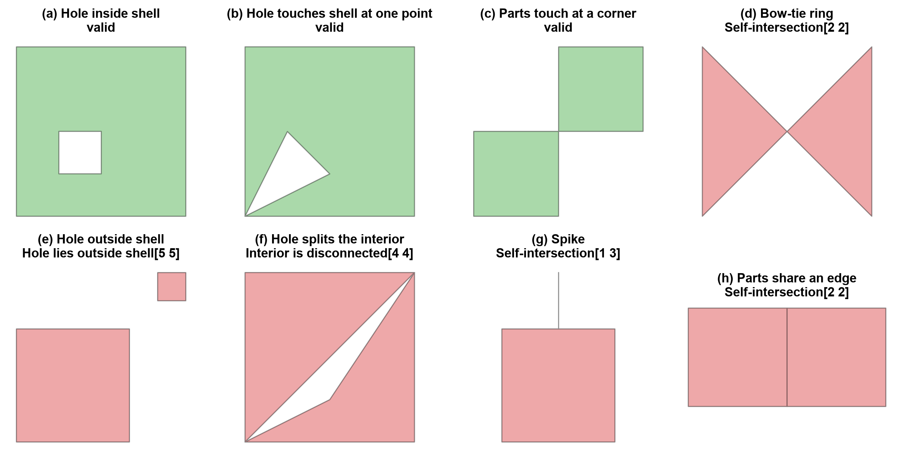
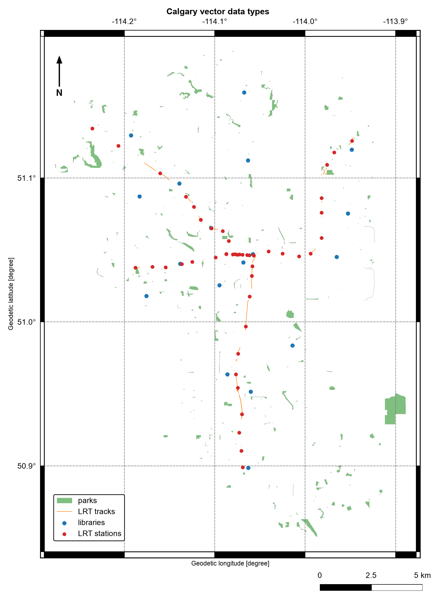

Remark
Please be aware that these lecture notes are accessible online in an ‘early access’ format. They are actively being developed, and certain sections will be further enriched to provide a comprehensive understanding of the subject matter.
4.1. Vector Data Types and Topology#
4.1.1. Learning objectives#
By the end of this section, you should be able to:
distinguish point, line, polygon, and multipart geometries;
explain how geometry and attributes form a feature;
describe the interior, boundary, and exterior of a geometry;
state the conditions that make a point, line, polygon, or multipart geometry valid, and diagnose violations with Shapely;
create Shapely geometries and organize them in a
GeoSeriesorGeoDataFrame;parse geometry values stored as text in a CSV file;
inspect a
GeoDataFramebefore a spatial operation; anddescribe the four topological relationships (adjacency, connectivity, containment, and coincidence) and the predicate that tests each.
Section goal
A spatial question starts with the feature type it needs. This section builds a small inventory of Calgary point, line, and polygon layers, then checks the validity, topology, and metadata that make those layers usable in later analysis.
4.1.2. The vector data model#
Vector data represents geographic features as discrete coordinate pairs (vertices) connected in defined patterns, together with descriptive attributes. Raster data, by contrast, stores values on a regular grid. Each model answers different questions:
Table 4.1 compares the two models.
Aspect |
Vector |
Raster |
|---|---|---|
Representation |
Points, lines, polygons |
Grid cells |
Accuracy |
Precise boundaries |
Approximate, resolution-dependent |
Best for |
Discrete features and networks |
Continuous phenomena |
Examples |
Libraries, tracks, districts |
NDVI, elevation, land cover |
A feature pairs one geometry with a record of attributes. The geometry answers where; the attributes answer what, when, or how much. A library branch is a point plus a name and opening hours; a community district is a polygon plus a code and a name.
4.1.3. Geometric primitives#
Every vector geometry is built from vertices, ordered coordinate tuples, and is classified by its topological dimension: the dimension of the space it occupies, regardless of how many coordinates (x, y, and optionally z) each vertex stores. Table 4.2 lists the three primitives.
Type |
Dimension |
Built from |
Minimum vertices |
Calgary example |
|---|---|---|---|---|
|
0 |
One vertex |
1 |
Library entrance |
|
1 |
Ordered vertices joined by straight segments |
2, distinct |
LRT track segment |
|
2 |
One closed exterior ring and zero or more interior rings (holes) |
4 coordinates: 3 distinct plus the repeated first |
Park site, community district |
Dimension decides what can be measured. A point has neither length nor area, a line has
length, and a polygon has both perimeter and area. A ring is a closed LineString
whose first and last vertices are identical; Shapely adds the closing vertex if you
leave it out. The exterior ring (the shell) bounds the polygon, and interior rings
cut holes out of it, such as a pond inside a park.
Each primitive has a multipart form (MultiPoint, MultiLineString, and
MultiPolygon) that stores several parts as one feature. A MultiPolygon is not the
same as several unrelated rows: a multipart feature is counted once, dissolved once, and
carries one attribute record. That distinction matters when counting parks, calculating
areas, or assigning a point to a district. A GeometryCollection can mix types in one
feature, but many operations and file formats do not support it, so treat one as a cue to
clean the data.
Shapely [Gillies et al., 2026] geometries can be created directly, which is useful for testing predicates and for understanding what a file parser produces:
city_hall Point dimension=0 vertices=1
stephen_avenue LineString dimension=1 vertices=3
plaza_block Polygon dimension=2 vertices=5
two_blocks MultiPolygon dimension=2 vertices=10
The polygon reports five vertices although we supplied four: Shapely added the closing vertex. The multipolygon’s ten vertices are two such five-vertex rings, yet it is still a single feature of dimension 2.
4.1.4. Interior, boundary, and exterior#
Both validity and topology rest on one idea: every geometry divides the plane into three disjoint parts [University of L'Aquila and Clementini, 2025]. The interior is the geometry itself without its edge, the boundary is the edge, and the exterior is everything else. Table 4.3 shows how the parts depend on the type.
Geometry |
Interior |
Boundary |
|---|---|---|
|
The point |
Empty |
|
Every point on the line except its two endpoints |
The two endpoints (empty if the line is closed) |
|
The enclosed area, excluding holes |
The shell and hole rings |
The boundary of a geometry has one dimension fewer than the geometry itself: a polygon’s boundary is a line, and a line’s boundary is a set of points. This is why a point on a park’s edge is not inside the park in the topological sense, a distinction that returns in the validity rules and in the predicates below.
point dimension=0 boundary=GeometryCollection empty=True
line dimension=1 boundary=MultiPoint empty=False
polygon dimension=2 boundary=LineString empty=False
A point’s boundary is empty, but Shapely returns it as an empty GeometryCollection, so
test is_empty rather than the type. The line’s boundary is two points (a MultiPoint)
and the polygon’s boundary is a line, one dimension lower each time.
4.1.5. What makes a geometry valid?#
A geometry is valid when it obeys the OGC Simple Features rules [Herring, 2011] that Shapely (through GEOS [GEOS: Geometry Engine - Open Source, 2024]), PostGIS, and most GIS software implement. The rules differ by type because each type can go wrong in its own way. Validity is a property of a single geometry, checked without reference to any other feature.
Software will usually store an invalid geometry without complaint. The problem appears later as a wrong area, an unreliable predicate, or an exception during overlay. Two terms are often confused:
valid: the geometry conforms to the rules for its type; and
simple: the geometry does not cross or touch itself. A line that crosses itself is valid but not simple.
4.1.5.1. Points#
A Point is valid when its coordinates are finite numbers. A single vertex cannot
intersect itself, so there is no geometric rule beyond that; NaN or infinite
coordinates, usually left by a failed parse, are what make a point invalid. An empty
point is valid, and it differs from a missing value (None), which has no geometry at
all. A MultiPoint is valid when every member is; duplicate members make it non-simple
but not invalid.
Validity does not mean correctness. A point with latitude and longitude swapped is a
perfectly valid point, in the wrong place. Range and bounds checks catch that error, not
is_valid.
4.1.5.2. LineStrings#
A LineString is valid when it has at least two distinct vertices, so it has non-zero
length, and its coordinates are finite. Repeated consecutive vertices are tolerated.
A line that crosses itself is valid but not simple, which is correct for a looping trail
and usually a digitising error for a street or rail centreline, where a crossing without
a shared vertex means a missing intersection node. A closed line has identical first
and last vertices, and a closed and simple line is a ring (is_ring). Rings are the
building blocks of polygons.
4.1.5.3. Polygons#
A Polygon has the most rules, because a ring can fail in several ways. A polygon is
valid when:
every ring is closed and has at least four coordinates (three distinct vertices plus the repeated first);
every ring is simple: it does not cross or touch itself, which excludes bow-ties, spikes, and zero-width slivers;
every hole lies inside the shell;
rings touch one another only at isolated points, never along an edge, and holes do not overlap each other; and
the interior is connected, so no pair of touching rings cuts the polygon into separate pieces.
Ring direction is not part of the rules. GeoJSON [Butler et al., 2016] recommends a counter-clockwise shell and clockwise holes, and readers must accept either. A bow-tie shows why rule 2 matters: its ring winds one way around one lobe and the opposite way around the other, so the signed-area formula cancels and the reported area collapses.
4.1.5.4. Multipart geometries#
A MultiLineString is valid when each member line is valid; members may cross or touch.
A MultiPolygon is valid when each member polygon is valid and the member interiors do
not overlap. Parts may touch at a point, but not along an edge: two parts that share an
edge should be one polygon, so software requires the merge.
Table 4.4 summarizes the rules.
Geometry |
Valid when |
Common causes of failure |
Related check |
|---|---|---|---|
|
Coordinates are finite |
|
Bounds or range check |
|
At least two distinct vertices |
Zero-length line |
|
|
Closed, simple rings; holes inside the shell; rings touch only at points; connected interior |
Bow-tie, spike, hole outside the shell, overlapping holes, split interior |
|
|
Each polygon valid; interiors disjoint; parts touch only at points |
Overlapping parts, parts sharing an edge |
|
|
Each member valid |
Same as the member type |
|
is_valid returns only True or False. shapely.validation.explain_validity returns
the rule that failed and the coordinates where it failed, which is the quickest way to
decide whether a problem is a digitising slip or a data-format issue. The cases below
run through the rules above.
Point valid=True simple=True Valid Geometry
Point with NaN valid=False simple=True Invalid Coordinate[nan 51.046]
Point, lat/lon swapped valid=True simple=True Valid Geometry
Line valid=True simple=True Valid Geometry
Line, one repeated vertex valid=False simple=True Too few points in geometry component[0 0]
Line, self-crossing valid=True simple=False Valid Geometry
Closed line (ring) valid=True simple=True Valid Geometry
MultiLineString, crossing valid=True simple=False Valid Geometry
Hole inside shell valid=True simple=True Valid Geometry
Hole touches shell at one point valid=True simple=True Valid Geometry
Parts touch at a corner valid=True simple=True Valid Geometry
Bow-tie ring valid=False simple=False Self-intersection[2 2]
Hole outside shell valid=False simple=True Hole lies outside shell[5 5]
Hole splits the interior valid=False simple=True Interior is disconnected[4 4]
Spike valid=False simple=False Self-intersection[1 3]
Parts share an edge valid=False simple=True Self-intersection[2 2]
The table separates three ideas that are easy to blur. A self-crossing line and a
crossing MultiLineString are valid but not simple, and the swapped latitude and
longitude point is valid because it is merely in the wrong place. The NaN point and
the repeated-vertex line are invalid. The last case, parts that share an edge, reports a
self-intersection at (2, 2) even though neither part crosses itself, which is how GEOS
flags that the two interiors should have been merged.


Fig. 4.1 Eight polygon test cases: green panels are valid, red panels break a validity rule, and each title gives the message from explain_validity.#
In Fig. 4.1, green panels are valid and red panels are not. The valid panels show the boundary cases: a hole may touch the shell at a single point, and two parts may meet at a corner. Each invalid panel breaks one rule from the list above.
Invalid geometry fails quietly at first and loudly later. The bow-tie below reports an area of zero, and an overlay on it raises an exception rather than returning a result.
bow-tie area: 0.0
GEOSException -> TopologyException: side location conflict at 2 2. This can occur if the input geometry is invalid.
Check validity before any overlay, area calculation, or spatial join. Repairing invalid
geometry with shapely.validation.make_valid is covered in section S06; the point here
is to detect the problem and name its cause.
4.1.6. GeoSeries and GeoDataFrames#
A GeoSeries [Jordahl et al., 2020] is a pandas Series whose values are geometries; it exposes
geometry-aware properties such as geom_type, bounds, and total_bounds. A
GeoDataFrame adds attribute columns and designates one geometry column as active.
Assigning a CRS with set_crs (or the crs= argument) only labels coordinates that
already use that CRS; it never transforms them. The Calgary sources store longitude and
latitude, so EPSG:4326 is the correct label for the layers built below.
name kind
0 City Hall civic point
1 Olympic Plaza public space
2 Stephen Avenue pedestrian corridor
3 Plaza blocks open space
geometry types: {'Point': 2, 'LineString': 1, 'MultiPolygon': 1}
parts per feature: [1, 1, 1, 2]
The four rows hold five geometric parts, because only the last feature is multipart: the plaza blocks are one row with two parts, so counting rows gives 4 features while counting parts would give 5.
4.1.7. Geometry encodings and coordinate order#
Geometry reaches a notebook in different encodings, and each one fixes the coordinate order differently. Table 4.5 lists the three used in this section.
Encoding |
Example |
Coordinate order |
Source here |
|---|---|---|---|
Well-known text (WKT) |
|
x y, so longitude latitude |
LRT stations, tracks, community districts |
GeoJSON |
|
longitude, latitude |
Parks sites |
Coordinate text |
|
latitude, longitude |
Library locations |
Shapely and GeoPandas always store x, y, which is longitude, latitude for geographic data. The official EPSG:4326 definition lists latitude first, and some libraries and web services follow it, so a swapped order is the most common silent error when reading coordinates from text. WKT [Herring, 2011] is also a quick way to see exactly what a geometry contains: a polygon’s WKT repeats its first vertex at the end, which is the ring closure from the validity rules.
x (longitude): -114.0573 y (latitude): 51.046
POLYGON ((-114.06 51.0453, -114.0582 51.0453, -114.0582 51.0463, -114.06 51.0463, -114.06 51.0453))
4.1.8. Load the Calgary layers#
The Calgary layers [Open Calgary: The City of Calgary Open Data Portal, 2026] arrive in three encodings. The library CSV stores points as
(latitude, longitude) text, the LRT and community CSV files store geometry as
well-known text (WKT), and the parks GeoJSON carries geometry directly. Keep the raw
columns and make every conversion explicit so a parsing choice can be audited later. The
coordinate range check in the parser guards against the most common CSV mistake:
swapping latitude and longitude.
{'libraries': 18, 'stations': 47, 'tracks': 5354, 'parks': 3036, 'communities': 313}
4.1.9. Inspect geometry types and CRS#
The geometry column is not just another text column: GeoPandas uses it to expose
geometry-aware properties and operations. The CSV-based layers are assigned WGS 84
because their source coordinates are longitude and latitude, and the parks layer
inherits its CRS from the GeoJSON file. WGS 84 is useful for mapping, but its units are
degrees rather than metres.
The first inspection of any layer should answer four questions:
What is the CRS?
How many rows are there?
Which geometry types are present?
Are any geometries missing or invalid? (see Table 4.4)
libraries CRS=EPSG:4326 rows= 18
{'Point': 18}
missing: 0 invalid: 0
stations CRS=EPSG:4326 rows= 47
{'Point': 47}
missing: 0 invalid: 0
tracks CRS=EPSG:4326 rows= 5354
{'LineString': 5354}
missing: 0 invalid: 0
parks CRS=EPSG:4326 rows= 3036
{'MultiPolygon': 3036}
missing: 0 invalid: 0
communities CRS=EPSG:4326 rows= 313
{'MultiPolygon': 313}
missing: 0 invalid: 1
Every layer carries EPSG:4326, and only one row (a community district) fails the
validity check. The geometry types hold a lesson of their own: the parks and community
layers are stored entirely as MultiPolygon, and no track is a MultiLineString, so a
multipart type does not mean a feature has several parts (the first park below has one).
Do not assume one row means one polygon.
In this download only the community layer contains an invalid row (row 309); the parks layer has none. explain_validity names the
rule that failed and where, which separates a local digitising slip from a systematic
problem.
communities row 309: Ring Self-intersection[-114.1109813 50.9214266]
The one invalid district, row 309, fails at a single vertex (a ring self-intersection near −114.111, 50.921): one localized fault among 313 districts, not a pattern across the layer. It is still a row in the layer, so an area sum or overlay that includes it needs a repair first.
4.1.10. View the primitives together#
A map shows the different spatial roles at a glance, but it does not replace metadata or validity checks. Sampling keeps the large parks and tracks layers readable while the full layers stay available for later operations.


Fig. 4.2 Calgary parks (polygons), LRT tracks (lines), and libraries and LRT stations (points); parks and tracks are random samples. Data: City of Calgary Open Data.#
Fig. 4.2 shows the three primitives playing different roles. The stations (points) follow the LRT lines, with arms reaching out from downtown, where the stations crowd so closely that they merge into a red band. The libraries (points) are scattered across the city with no link to the line. The parks (polygons) are small and patchy apart from one large park at the eastern edge. The map draws only 300 of the 3,036 parks and 500 of the 5,354 track segments, which is why the tracks look broken and many parks are missing, so use it for orientation, not for counting.
4.1.11. Topology is about relationships#
Geometry describes where a feature is: coordinates, lengths, and areas that change when you reproject or edit a vertex. Topology describes how features relate to one another, and those relationships survive a change of CRS. Four relationship types cover the questions asked most often:
Adjacency: which features share a boundary (two neighbouring districts);
Connectivity: which features join end to end (track segments that form a route);
Containment: which features lie inside others (a library within a district); and
Coincidence: which features occupy the same location (a station that sits on a track).
A point’s coordinates alone do not say whether it belongs to a park or district. That
meaning comes from a predicate such as within. Likewise, a collection of nearby line
features is not automatically a connected transport network; endpoints and gaps must be
checked.
4.1.11.1. From relationships to predicates#
Table 4.6 maps each relationship to the Shapely predicate that tests it.
Relationship |
Question |
Predicate |
Typical pair |
|---|---|---|---|
Adjacency |
Do the features share a boundary but no interior? |
|
polygon, polygon |
Connectivity |
Do the lines meet end to end? |
|
line, line |
Containment |
Is one feature inside the other? |
|
point, polygon |
Coincidence |
Do the features occupy the same location? |
|
point, line |
Each predicate is a statement about how the interior, boundary, and exterior of geometry
A meet those of geometry B. touches requires that the interiors do not meet while the
boundaries do, so polygons that share an edge touch, and polygons that share area
overlap. intersects is the broadest test: it is True for any contact and is the
exact opposite of disjoint.
Two edge cases matter in practice. A point on a polygon’s edge is not within it,
because it lies on the boundary, not the interior, but covers accepts it. And
touches is also True for a T-junction, where one line ends on the middle of another,
so strict end-to-end connectivity needs the endpoints compared directly.
The complete answer is the DE-9IM matrix [Egenhofer and Franzosa, 1991, University of L'Aquila and Clementini, 2025] that relate returns: nine characters, one for
each pairing of A’s interior, boundary, and exterior with B’s, recording the dimension of
the overlap (F for none, 0 for points, 1 for lines, 2 for areas). The named
predicates are readable patterns over that string. A toy example makes the edge cases
visible.
adjacency A.touches(B) True
adjacency A.overlaps(B) False
connectivity seg1.touches(seg2) True
connectivity seg1.boundary meets seg2.boundary True
containment library.within(A) True
containment library.within(B) False
coincidence station.intersects(seg1) True
edge case edge_point.within(A) False
edge case edge_point.touches(A) True
edge case A.covers(edge_point) True
A.relate(B): FF2F11212
edge_point.relate(A): F0FFFF212
Reading the first string, FF2F11212: the first character is F, so the interiors of A
and B never meet, and the fifth character is 1, so their boundaries meet along a line.
That combination is what “adjacent” means. The same predicates work on real layers:
first park type: MultiPolygon
first park parts: 1
first library within first park: False
first track intersects first park: False
first two districts are adjacent: False
first two track segments connect: False
library bounds: [-114.193 50.899 -113.949 51.159]
park bounds: [-114.319 50.848 -113.884 51.194]
A False result is a valid answer. The first rows of a layer are arbitrary, so these
calls demonstrate the predicates rather than describe the whole layer. To test every
feature at once, use a spatial join, which applies the same predicate with a spatial
index.
4.1.12. Why topology matters#
Predicates such as within, touches, and intersects turn coordinates into answers:
they drive spatial joins, network construction, and quality control. They also carry a
performance lesson. Comparing every feature against every other feature is quadratic in
the number of features, so GeoPandas predicates and joins use a spatial index to test
only candidates whose bounding boxes overlap. Checking total_bounds and geometry
validity first keeps those operations fast and correct.
Validity concerns one geometry at a time. Topology rules concern the layer as a whole, and every geometry in a layer can be valid while the layer still breaks them, as in Table 4.7.
Layer |
Rule |
Typical violation |
|---|---|---|
Polygons (districts, parcels) |
Features must not overlap |
A shared boundary digitised twice with a small offset |
Polygons (districts, parcels) |
Features must not leave gaps |
Thin slivers between neighbouring districts |
Lines (rail, roads) |
Connected segments must share an endpoint |
Dangling ends that stop just short of the next segment |
Points (stations, libraries) |
Points must lie in or on the feature they describe |
A station placed beside its track |
A False from touches between two neighbouring districts can therefore mean a gap in
the layer rather than a true separation, which is why the checks above are tools for
investigation and not proof of correctness.
4.1.13. Summary#
Points, lines, polygons, and multipart geometries encode different spatial meanings, and each divides space into an interior, a boundary, and an exterior. A geometry is valid only if it meets the rules for its type: finite coordinates for points, at least two distinct vertices for lines, and closed, simple, properly nested rings with connected interiors for polygons. Validity is about one geometry; topology is about how features relate, and layer-level rules such as no overlaps or gaps are checked separately. The Calgary sources also show how a geometry type can hide inside a file format: a CSV may contain points or lines as text or WKT, while GeoJSON exposes its geometry directly. Inspect geometry types, CRS, bounds, missing values, and validity before choosing an operation. Continue with S02 for measurements and derived geometries.